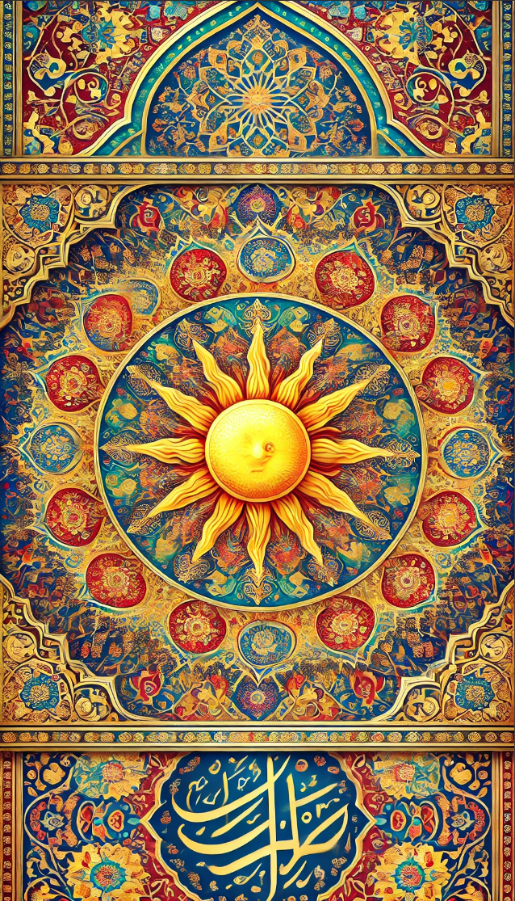

II · Glaubensgemeinschaft Archivblatt 07
Die Harmonie von Mond & Sonne
Shindar und Mahzar
Sonne und Mond stehen für die Kräfte, die der Mensch durch seine Entscheidungen stärkt. Die Große Schule lehrt Verantwortung, Erkenntnis und den Weg zur Harmonie.

Gestalten dieser Überlieferung
Götterkreis & Gestalten
Die Namen, Bildnisse und Aspektzuordnungen dieser Glaubensrichtung. Verweise führen zu den entsprechenden Überlieferungen im Glaubenscodex.
Die Harmonie
02Diese Spur verliert sich im Archiv.
Zu dieser Suche wurde kein Eintrag gefunden. Versucht einen anderen Namen oder öffnet wieder alle Kapitel.
Einführung
Die Harmonie von Mond & Sonne ist eine Religion, die neben den Hohen Drei, der Celestischen Synode und der Alerischen Kirche auf den südlichen Kontinenten praktiziert wird. Diese Glaubensrichtung entspringt dem Alten Druidenkult, auch bekannt als " Der Alte Glaube, " und wurde ursprünglich von Schamanen und späteren Druiden an die Menschen der Steppe und des Sandes weitergegeben.
Im Gegensatz zu anderen Religionen, die klare Unterscheidungen zwischen Göttern und Dämonen ziehen, distanziert sich die Harmonie von Mond und Sonne bewusst von diesen Konzepten. In der Alerischen Kirche etwa gibt es die 9 guten Götter, die den Mächten des Lichts und der Tugend zugeordnet sind, sowie die 9 Infernalen Götter, die als ihre bösen Gegenspieler gelten. Die Harmonie von Mond und Sonne interpretiert dieses dualistische Konzept jedoch anders: Hier stehen die 9 guten Götter symbolisch für die Sonne, den Himmelskörper, der Licht, Leben und Freude bringt, während die 9 Dämonengötter den Mond verkörpern, der die Dunkelheit und die Nacht repräsentiert.
In dieser Religion geht man davon aus, dass der Mensch vor eine fundamentale Wahl gestellt wird: sich entweder für den Tag und das Licht oder für die Nacht und die Dunkelheit zu entscheiden. Die Harmonie von Mond und Sonne betont dabei, dass es letztlich der Mensch ist, der die Macht über die Götter besitzt. Die Verantwortung liegt in den Händen des Einzelnen, der durch seine Handlungen entscheidet, welche Kraft er stärkt – das Gute oder das Böse. Die Götter, so wird gelehrt, sind ohne das Eingreifen der Menschen passiv und nicht handlungsfähig. Es ist die Entscheidung des Menschen, die ihre Macht aktiviert.
Allerdings stimmt diese Annahme nur teilweise, da sowohl die Infernalen Götter als auch die guten Götter über Wesen und Entitäten wie die Fünf Souveränen verfügen, die ihnen einen gewissen Handlungsfreiraum erlauben. Diese Entitäten können in die menschliche Welt eingreifen und die Balance zwischen Licht und Dunkelheit beeinflussen. Trotz dieser Überzeugung bleibt die zentrale Lehre der Harmonie von Mond und Sonne, dass die ultimative Macht und Verantwortung bei den Menschen liegt, die das Gleichgewicht zwischen Tag und Nacht, Licht und Dunkelheit, durch ihre Taten bewahren oder verschieben können.
Hintergrund
Die Religion der Harmonie von Mond & Sonne wurzelt tief in den alten Traditionen der Schamanen der Steppe, die sich im Laufe der Zeit von den Druiden der Alben entfremdeten. Diese Schamanen lebten über Generationen hinweg in Isolation, unter der sengenden Sonne und dem sanften Licht des Mondes, die das tägliche Leben in ihrer kargen und wilden Heimat bestimmten. Während die Druiden der Alben eine enge Verbindung zur Natur und den Göttern pflegten, begannen die Schamanen der Steppe, die Lehren ihrer einstigen Mentoren anders zu interpretieren.
In der Einsamkeit ihrer Steppenheimat entwickelten die Schamanen eine neue Sichtweise auf die Welt und die Kräfte, die sie regieren. Sie nahmen den Zyklus von Tag und Nacht als zentrales Konzept und übertrugen diese natürlichen Abläufe in eine tiefere allegorische und symbolische Bedeutung. So entstand die Idee, dass der Tag und die Nacht nicht nur natürliche Phänomene sind, sondern auch als Metaphern für das Gute und das Böse dienen können.
Die Sonne, die das Land am Tag erhellt und Leben spendet, wurde zum Symbol des Guten – einer Kraft, die Licht, Freude und Wärme bringt. Der Mond, der die Nacht regiert, wurde dagegen als Symbol der Dunkelheit und des Bösen interpretiert, ein stiller Begleiter, der die Schatten und die Kälte der Nacht mit sich bringt. In dieser dualistischen Sichtweise verkörpert der Tag das Streben nach Tugend und das Licht, während die Nacht die Versuchungen und die Dunkelheit des Bösen repräsentiert.
Die Schamanen trugen diese neue Interpretation ihrer Lehren an die Menschen der Steppe und des Sandes heran. Sie schufen eine Religion, die auf dem Verständnis des ewigen Zyklus von Licht und Dunkelheit, Tag und Nacht basiert und den Menschen die Wahl lässt, welcher dieser Kräfte sie in ihrem Leben folgen wollen. Die Harmonie von Mond und Sonne, geboren aus der Isolation und dem natürlichen Zyklus, wurde zur zentralen spirituellen Kraft in dieser Region, eine Religion, die sich klar von der Idee der Götter und Dämonen distanziert und stattdessen die Verantwortung und Macht in die Hände der Menschen legt.
Doktrine
Trotz der Ablehnung des Konzepts eines Gottes gibt es in der Religion der Harmonie von Mond & Sonne dennoch Entitäten, die von den Menschen in gewisser Weise verehrt werden. Diese Verehrung ist jedoch weniger als Anbetung im traditionellen Sinne zu verstehen, sondern vielmehr als eine Form der Meditation, Schulung, Philosophie und des Studiums. Die Menschen streben danach, diese Entitäten zu verstehen und ihre Bedeutung für das menschliche Dasein nachzuvollziehen.
Shindar oder Shindarr verkörpert die Entität der Sonne, des Lichts, des Guten und der Reinheit. Die Anhänger dieser Religion eifern Shindar nach und sehen in dieser Entität die Verkörperung reiner Tugenden wie Liebe, Gnade, Freude, Ehre, Tapferkeit und Weisheit. Shindar wird nicht als ein Gott im herkömmlichen Sinne verehrt, sondern als Ideal, dem man nacheifern möchte. Die Anhänger streben danach, diese Tugenden in ihrem Leben zu verwirklichen und so das Licht und die Reinheit Shindars in die Welt zu tragen.
Auf der anderen Seite steht Mahzar , der Mond, der nicht verachtet, sondern respektvoll gefürchtet wird. Mahzar repräsentiert alles, was den Menschen in Versuchung führen und verderben kann, wenn er nicht achtsam ist. Mahzar wird nicht als bösartig oder dämonisch dargestellt, sondern als eine mächtige Kraft, die sowohl Gefahr als auch Erkenntnis birgt. Die Menschen werden davor gewarnt, "im Schatten von Mahzar" zu wandeln, was symbolisch dafür steht, den dunklen Gelüsten und niedersten Instinkten nachzugeben, die in jedem Menschen schlummern.
Die Religion lehrt, dass jeder Mensch das Potenzial hat, sowohl das Licht Shindars als auch die Dunkelheit Mahzars in sich zu tragen. Es ist die Aufgabe jedes Einzelnen, bewusst zu wählen, welchem Weg er folgen möchte. Dabei wird jedoch betont, dass Mahzar nicht dämonisiert werden soll, sondern als Teil der menschlichen Natur verstanden werden muss, der es zu kontrollieren und zu überwinden gilt. Die Meditation über Mahzar dient dazu, sich der eigenen Schwächen bewusst zu werden und sie zu meistern, während die Hingabe an Shindar das Streben nach den höchsten Tugenden fördert.
Unterschiede
Die Alerische Kirche glaubt an 9 tugendhafte Primärgottheiten, deren Kehrseiten und Spiegelbilder die 9 Dämonengötter darstellen. Die Gläubigen werden davor gewarnt, sich vor den 9 Infernalen zu hüten, und die Kirche legt großen Wert auf die Verehrung der 9 guten Götter und deren Tugenden. Im Wesentlichen laufen beide Religionen – die Alerische Kirche und die Harmonie von Mond & Sonne – auf dasselbe Ziel hinaus: das Streben nach Tugend und das Vermeiden von Verderbnis.
Ein fundamentaler Unterschied liegt jedoch in der Art und Weise der Verehrung. In der Alerischen Kirche sind Gebete, Huldigung und Anbetung grundlegende Bestandteile des religiösen Lebens. Die Gläubigen suchen durch Rituale, Gottesdienste und Gebete die Gunst ihrer Götter und hoffen, durch ihre Hingabe und Anbetung göttlichen Schutz und Führung zu erhalten.
In der Harmonie von Mond & Sonne hingegen findet die Verehrung von Shindar und Mahzar auf eine ganz andere Weise statt. Anstelle von Huldigung und Anbetung tritt das Streben nach Verstehen in den Vordergrund. Die Anhänger dieser Religion ehren Shindar und Mahzar durch Studium, Meditation, Disziplin und Selbstreflexion. Die Verehrung ist eine innere Reise, bei der es darum geht, die tiefere Bedeutung und die Kräfte, die diese Entitäten verkörpern, zu erfassen und in das eigene Leben zu integrieren.
Während in der Alerischen Kirche der Gläubige durch äußere Handlungen und Gebete seine Verbindung zu den Göttern sucht, konzentriert sich die Harmonie von Mond & Sonne auf den inneren Prozess des Lernens und Erkennens. Es geht darum, die Tugenden von Shindar und die Versuchungen von Mahzar zu verstehen und bewusst zu wählen, wie man im eigenen Leben handelt. Die Verehrung erfolgt durch die aktive Auseinandersetzung mit den eigenen Gedanken, Gefühlen und Handlungen, mit dem Ziel, ein tieferes Verständnis der kosmischen Kräfte und der eigenen Rolle in der Welt zu erlangen.
Die Große Schule
Die Religion der Harmonie von Mond und Sonne ist weniger eine traditionelle Religion als vielmehr eine umfassende Weltanschauung und Lehre, die das Gleichgewicht zwischen Licht und Dunkelheit in allen Aspekten des Lebens betont. Diese Lehre wird durch die Große Schule vermittelt, die zwei Hauptstränge umfasst: die Gelehrten und die Kriegermönche.
In den Landen, wo diese Weltanschauung praktiziert wird, gibt es Universitäten und Kampfschulen, die diese beiden Stränge verkörpern. Die Universitäten sind Orte des Wissens und der Philosophie, an denen sich die Gelehrten den Studien der Ethik, Metaphysik und der kosmischen Ordnung widmen. Hier wird nicht nur akademisches Wissen vermittelt, sondern auch tiefgreifende spirituelle Weisheit, die darauf abzielt, den Geist zu erleuchten und das Verständnis für die dualistische Natur des Universums zu fördern.
Auf der anderen Seite konzentrieren sich die Kampfschulen auf die Ausbildung von Körper und Geist. Diese Schulen lehren die Schüler die kriegerischen Aspekte der Harmonie, wobei der Fokus auf der Kunst des Kampfes mit bloßen Händen und Füßen liegt. Diese besondere Ausbildung, die sowohl körperliche Stärke als auch geistige Disziplin erfordert, bringt die Klasse der Jahid hervor – die Kriegermönche, die in der Lage sind, sich selbst und ihre Gemeinschaft zu verteidigen.
Die Jahid sind nicht nur meisterhafte Kämpfer, sondern auch Hüter der Harmonie von Mond und Sonne. Ihre Ausbildung lehrt sie, das Gleichgewicht zwischen ihren physischen Fähigkeiten und ihrem geistigen Verständnis zu wahren. Sie sind sowohl Krieger als auch spirituelle Disziplinierte, die die Prinzipien der Harmonie in jedem Aspekt ihres Lebens anwenden.
In dieser Weltanschauung gibt es keine Priester oder Kleriker im traditionellen Sinne. Stattdessen stehen die Mönche und Gelehrten im Zentrum der Lehre, und ihre Aufgabe ist es, die Weisheit und die kriegerischen Fähigkeiten der Harmonie weiterzugeben und zu bewahren. Die Große Schule und ihre zwei Stränge sind das Herzstück dieser Lehre, und sie gewährleisten, dass sowohl die geistige als auch die körperliche Seite der Harmonie von Mond und Sonne in Einklang bleiben und weitergeführt werden.
Ämter, Dienste und Berufungen
Ränge der Großen Schule
Die überlieferte Reihenfolge und die Aufgaben dieser Glaubensgemeinschaft. Öffnet einen Rang, um seine Beschreibung zu lesen.
01Auserwählter
Der Auserwählte ist ein außergewöhnlicher Ehrentitel und Rang innerhalb der Harmonie von Mond & Sonne, der nur in besonderen Zeiten vergeben wird. Diese Religion ist so strukturiert, dass sie von einem Rat mehrerer Erwachter geführt wird, die als Vorstand und Gremium fungieren. Diese Erwachten treffen gemeinsam Entscheidungen und leiten die spirituellen und organisatorischen Geschicke der Gemeinschaft.
Der Auserwählte wird in außergewöhnlichen Situationen aus diesem Gremium heraus temporär gewählt, um als Richter, Mediator oder Kanzler zu agieren. Seine Rolle ist es, in Zeiten besonderer Herausforderungen oder Konflikte absolute Entscheidungen zu treffen, die über die übliche kollektive Führung hinausgehen. Er besitzt in dieser Zeit eine besondere Autorität, die es ihm ermöglicht, auch schwierige und weitreichende Entscheidungen im Sinne der Harmonie zu fällen.
Das Amt des Auserwählten ist jedoch nicht dauerhaft. Es ist so konzipiert, dass es nach einer bestimmten Periode wieder niedergelegt werden muss. Diese Amtszeit ist bewusst begrenzt, um zu verhindern, dass eine einzelne Person zu viel Macht akkumuliert und um sicherzustellen, dass die Entscheidungsprozesse wieder an das Gremium der Erwachten zurückgegeben werden. Nach dem Ende seiner Amtszeit kehrt der Auserwählte in seine frühere Position zurück, und es folgt oft eine Phase, in der das Amt vakant bleibt, bevor erneut ein Auserwählter ernannt wird.
Diese Struktur ermöglicht es der Religion, in Zeiten der Not oder Unsicherheit schnell und entschlossen zu handeln, während sie gleichzeitig sicherstellt, dass die Macht und Verantwortung innerhalb der Gemeinschaft verteilt bleibt. Der Auserwählte wird daher als ein Amt betrachtet, das sowohl große Ehre als auch große Verantwortung mit sich bringt, und das nur dann zum Einsatz kommt, wenn es wirklich notwendig ist.
02Erwachter
Der Erwachte ist der höchste Rang innerhalb der Harmonie von Mond & Sonne und steht über dem Erleuchteten. Als Großmeister verkörpert der Erwachte die vollkommene Verbindung von Weisheit, spiritueller Erleuchtung und autoritativer Führung. Dieser Titel ist jenen vorbehalten, die nicht nur tief in die Geheimnisse der Lehren eingedrungen sind, sondern auch die Fähigkeit besitzen, eine gesamte Strömung oder ein großes Gebiet innerhalb der Religion zu leiten.
Der Erwachte ist oft verantwortlich für die übergeordnete Aufsicht und Führung mehrerer Schulen, Universitäten oder Klöster. Er koordiniert die Aktivitäten der Erleuchteten und stellt sicher, dass die Lehren der Harmonie von Mond & Sonne einheitlich und in ihrer wahren Form weitergegeben werden. Seine Aufgabe ist es, die philosophischen und spirituellen Prinzipien in den gesamten von ihm betreuten Gebieten zu bewahren und weiterzuentwickeln.
Darüber hinaus spielt der Erwachte eine bedeutende Rolle am Hofe des Adels. Als spiritueller Berater und weiser Ratgeber dient er den Herrschern in Angelegenheiten, die das Gleichgewicht von Licht und Dunkelheit, ethische Fragen oder wichtige Entscheidungen betreffen. Seine Anwesenheit am Hof verleiht dem Adel nicht nur eine spirituelle Legitimation, sondern auch tiefe Einsichten, die in politischen und sozialen Entscheidungen von entscheidender Bedeutung sein können.
Der Erwachte ist das lebende Symbol der Harmonie und des Gleichgewichts. Seine Weisheit wird weit über die Grenzen seiner Gemeinschaft hinaus anerkannt, und seine Lehren beeinflussen das Leben vieler Menschen, sowohl innerhalb der religiösen Gemeinschaft als auch in der weltlichen Gesellschaft. Seine Verantwortung ist es, die Essenz der Harmonie von Mond & Sonne zu verkörpern und die Balance zwischen den Kräften des Lichts und der Dunkelheit aufrechtzuerhalten, sowohl in der spirituellen Sphäre als auch in der realen Welt.
03Erleuchteter
Der Erleuchtete ist ein hochrangiger Kleriker in der Harmonie von Mond & Sonne, der die Leitung einer Schule, Universität oder eines Klosters innehat. In dieser erhabenen Position ist der Erleuchtete sowohl ein spiritueller als auch ein intellektueller Führer, der eine Vielzahl von Lehrern und Schülern unter sich hat. Seine Weisheit und sein umfassendes Wissen machen ihn zu einem unbestrittenen Autoritätsfigur, der die Richtung der Lehre und die Entwicklung der Schüler maßgeblich prägt.
Als Leiter einer Institution ist der Erleuchtete verantwortlich für die Gestaltung und Überwachung des gesamten Lehrplans, die spirituelle Führung der Gemeinschaft und die Aufrechterhaltung der philosophischen und ethischen Standards der Harmonie. Er leitet fortgeschrittene Studiengruppen, hält bedeutende Vorlesungen und dient als Hauptberater in theologischen und philosophischen Fragen. Der Erleuchtete ist derjenige, der die Prinzipien von Licht und Dunkelheit in ihrer tiefsten Form verstanden hat und diese Einsichten an die nächste Generation weitergibt.
Im kriegerischen Aspekt der Religion übernimmt der Erleuchtete eine ebenso bedeutende Rolle. Als Meister einer Kampfschule ist er der oberste Lehrer und Führer der Kriegermönche. Unter seiner Leitung werden nicht nur die körperlichen Fähigkeiten der Schüler geschult, sondern auch ihre geistige und moralische Disziplin gestärkt. Der Erleuchtete sorgt dafür, dass die Schüler nicht nur starke Kämpfer, sondern auch weise und besonnene Krieger werden, die die Werte der Harmonie von Mond & Sonne auf dem Schlachtfeld verkörpern.
Der Erleuchtete ist somit sowohl im intellektuellen als auch im kriegerischen Bereich eine zentrale Figur, die die Verbindung zwischen spiritueller Weisheit und praktischer Anwendung symbolisiert. Seine Rolle ist es, die Lehren der Harmonie zu bewahren, weiterzuentwickeln und sicherzustellen, dass sie durch die Schüler und Krieger, die unter seiner Anleitung stehen, in die Welt hinausgetragen werden.
04Philosoph
Der Philosoph ist ein hoch angesehener Lehrmeister innerhalb der Harmonie von Mond & Sonne. Dieser Rang steht für jemanden, der nicht nur tiefes Wissen und Weisheit erlangt hat, sondern auch die Fähigkeit besitzt, diese Erkenntnisse an andere weiterzugeben. Der Philosoph ist sowohl ein Mentor als auch ein Lehrer, der die Verantwortung trägt, die nächsten Generationen von Suchenden, Laien und Novizen zu formen und zu leiten.
Als Kopf einer Schule oder als einer von mehreren Lehrmeistern ist der Philosoph dafür verantwortlich, die Lehren der Harmonie in ihrer reinsten Form zu vermitteln und zu bewahren. Er führt seine Schüler durch komplexe philosophische und spirituelle Studien und hilft ihnen, die Prinzipien von Licht und Dunkelheit, wie sie in dieser Religion verstanden werden, zu erfassen und in ihrem Leben anzuwenden.
Neben seiner Rolle als Lehrer übernimmt der Philosoph oft auch administrative Aufgaben innerhalb der Schule. Er ist in die Gestaltung des Lehrplans involviert, organisiert Meditationen und Studienkreise und sorgt dafür, dass die Schule in Übereinstimmung mit den spirituellen und moralischen Prinzipien der Harmonie von Mond & Sonne geführt wird.
Der Philosoph ist ein zentraler Pfeiler der Gemeinschaft, der sowohl durch seine Weisheit als auch durch sein Engagement für die Bildung und das Wohl seiner Schüler hervorsticht. Er dient als Vorbild für andere und trägt die schwere Verantwortung, die spirituellen und philosophischen Traditionen der Harmonie zu bewahren und weiterzugeben.
05Jünger
Der Jünger ist ein einzigartiger Rang innerhalb der Harmonie von Mond & Sonne, der speziell für diejenigen reserviert ist, die ihren Weg als Krieger in den Dienst des Klerus gestellt haben. Anders als die traditionelleren Mitglieder des Klerus, die tief in den philosophischen und spirituellen Lehren der Religion verwurzelt sind, hat der Jünger eine eher oberflächliche Ausbildung in diesen Bereichen erhalten. Seine Hauptkompetenz liegt im kämpferischen Aspekt der Religion, und er hat sich dem Schutz der Gemeinschaft und der Verteidigung ihrer Werte verschrieben.
Der Jünger wird in den Klerus aufgenommen, um seine Rolle als Mönchskrieger anzuerkennen und ihm einen formalen Platz innerhalb der religiösen Hierarchie zu geben. Allerdings wird ihm nicht dieselbe Verpflichtung zur intensiven spirituellen Schulung auferlegt wie denjenigen, die sich ganz dem Studium und der Meditation widmen. Stattdessen wird er als vollwertiger Kleriker anerkannt, ohne die Verpflichtung, sich tiefgreifend mit den theologischen oder administrativen Aspekten der Religion zu befassen.
Dieser Rang bietet den Mönchskriegern die Möglichkeit, Teil der religiösen Gemeinschaft zu sein, ohne ihre primäre Berufung – die Kriegsführung und den Schutz der Harmonie – aufgeben zu müssen. Sie werden respektiert und geschätzt für ihre Fähigkeiten und ihren Mut, auch wenn sie nicht das gleiche Niveau an spirituellem Wissen erreicht haben wie die anderen Ränge des Klerus.
Der Jünger steht somit symbolisch für die Verbindung von körperlicher Stärke und spiritueller Hingabe, wobei der Schwerpunkt eher auf der Tatkraft und der Verteidigung der Gemeinschaft liegt. Seine Rolle ist es, die Prinzipien der Harmonie von Mond & Sonne durch sein Handeln auf dem Schlachtfeld zu verteidigen und zu verkörpern, während er gleichzeitig die Unterstützung und Anerkennung des Klerus genießt.
06Gelehrter
Der Gelehrte ist ein hoch angesehener Mönch der Harmonie von Mond & Sonne, der durch sein tiefes Wissen und seine Erfahrung eine zentrale Rolle innerhalb der Schule oder des Klosters einnimmt. Mit seiner fortgeschrittenen Weisheit und seinem umfassenden Verständnis der Lehren hat er sich das Vertrauen und den Respekt der Gemeinschaft erworben und übernimmt nun vielfältige Rollen und Aufgaben, die weit über die der Adepten hinausgehen.
Als Gelehrter trägt er eine große Verantwortung, sowohl in der Lehre als auch in der Verwaltung der Institution. Er ist befähigt, verschiedene Themen zu unterrichten, Studiengruppen zu leiten und tiefergehende spirituelle und philosophische Diskussionen zu führen. Seine Aufgabe ist es, die nachfolgenden Generationen in den Lehren der Harmonie zu unterweisen und sie auf ihren eigenen spirituellen Wegen zu begleiten.
Neben seinen Lehrverpflichtungen übernimmt der Gelehrte oft auch organisatorische und administrative Aufgaben. Er kann für die Leitung bestimmter Einrichtungen innerhalb des Klosters oder der Schule verantwortlich sein, wie beispielsweise die Bibliothek, die Studienhallen oder Meditationsräume. Darüber hinaus spielt er eine entscheidende Rolle in der Planung und Durchführung von Ritualen, Festen und anderen wichtigen Ereignissen in der Gemeinschaft.
Die Position des Gelehrten erfordert nicht nur tiefes Wissen, sondern auch die Fähigkeit, komplexe organisatorische Herausforderungen zu meistern. Er muss sicherstellen, dass die Lehren der Harmonie von Mond & Sonne in allen Bereichen des Gemeinschaftslebens präsent sind und dass die Strukturen des Klosters oder der Schule reibungslos funktionieren. Seine administrative Rolle umfasst die Koordination der täglichen Abläufe, die Verwaltung von Ressourcen und die Sicherstellung, dass die Gemeinschaft ihre Ziele in Übereinstimmung mit den Prinzipien der Harmonie erreicht.
Insgesamt ist der Gelehrte eine Schlüsselperson innerhalb der Schule oder des Klosters, die sowohl als Lehrer, Führer und Verwalter agiert und wesentlich zur Aufrechterhaltung und Weiterentwicklung der Gemeinschaft beiträgt.
07Adept
Der Adept ist ein vollwertiger Mönch der Harmonie von Mond & Sonne und hat sich als fähiger und verantwortungsvoller Anhänger der Lehren etabliert. In dieser Phase seines spirituellen Weges hat er nicht nur ein tiefes Verständnis der dualistischen Prinzipien erlangt, sondern auch die Disziplin und Weisheit entwickelt, die erforderlich sind, um diese Lehren in allen Aspekten seines Lebens anzuwenden.
Als Adept übernimmt er bereits erhebliche Verantwortung innerhalb des Klosters und der Schule. Seine Aufgaben können das Leiten von Studiengruppen, die Durchführung von Meditationen oder die Überwachung der täglichen Abläufe im Kloster umfassen. Der Adept ist zudem in der Lage, jüngere Novizen anzuleiten und sie in ihrem Studium zu unterstützen, was ihm eine wichtige Mentor- oder stellvertretende Rolle innerhalb der Gemeinschaft verleiht.
Der Adept wird von seinen Mitbrüdern und -schwestern respektiert und als Vorbild angesehen. Seine Erfahrungen und sein Wissen ermöglichen es ihm, in schwierigen Situationen Rat zu geben und als Vermittler oder Berater zu fungieren. Durch seine Hingabe an die Lehren und seine Bereitschaft, diese aktiv zu praktizieren und zu lehren, trägt der Adept wesentlich zur Erhaltung und Weitergabe der Weisheiten der Harmonie von Mond & Sonne bei.
Dieser Rang markiert einen entscheidenden Punkt in der spirituellen Reise des Adepten, da er nun nicht nur Schüler, sondern auch Lehrer und Führer innerhalb der Gemeinschaft ist. Seine Rolle ist von zentraler Bedeutung für die Kontinuität und das Wachstum der Lehren, und er bereitet sich darauf vor, in Zukunft noch größere Verantwortung zu übernehmen.
08Novize
Der Novize hat auf seinem Weg der Erkenntnis bereits bedeutende Fortschritte gemacht und beginnt, ein tieferes Verständnis für die Lehren der Harmonie von Mond & Sonne zu entwickeln. Er hat die Grundlagen verinnerlicht und zeigt ein gesteigertes Bewusstsein für die dualistischen Prinzipien von Licht und Dunkelheit sowie deren Einfluss auf das menschliche Dasein.
In dieser Phase wird der Novize langsam an seine Aufgaben innerhalb des Klosters und der Schule herangeführt. Er übernimmt erste Verantwortungen, die ihm helfen, seine Kenntnisse praktisch anzuwenden und seine Fähigkeiten weiter auszubauen. Dazu gehören Tätigkeiten wie die Unterstützung bei Lehrveranstaltungen, die Pflege der spirituellen Räume und die Anleitung jüngerer Schüler bei einfachen Studienaufgaben.
Der Alltag des Novizen ist geprägt von intensivem Studium, regelmäßiger Meditation und der aktiven Teilnahme am gemeinschaftlichen Leben des Klosters. Durch diese Erfahrungen lernt er, Theorie und Praxis zu vereinen und die Prinzipien der Harmonie in seinem täglichen Handeln widerzuspiegeln. Zudem beginnt er, seine eigenen Gedanken und Einsichten mit anderen zu teilen, was seine rhetorischen und didaktischen Fähigkeiten fördert.
Der Übergang zum Novizenstatus markiert einen wichtigen Meilenstein auf dem spirituellen Pfad des Individuums. Es ist eine Zeit des Wachstums und der Vertiefung, in der der Novize sich darauf vorbereitet, künftig noch größere Rollen und Verantwortlichkeiten innerhalb der Gemeinschaft zu übernehmen und sein Wissen zum Wohle aller einzusetzen.
09Laie
Der Laie ist ein Schüler, der den ersten Schritt über die Schwelle des Suchenden hinaus gemacht hat und sich aktiv dem Studium der Harmonie von Mond & Sonne widmet. Obwohl er bereits einige grundlegende Erkenntnisse gewonnen hat, steht ihm noch ein langer Weg bevor, um das volle Verständnis der Lehren zu erlangen.
Der Laie hat sein Studium aufgenommen und zeigt ein tieferes Engagement und eine größere Hingabe an die Prinzipien der Harmonie. Er beginnt, sich intensiver mit den philosophischen und spirituellen Lehren auseinanderzusetzen und erwirbt ein grundlegendes Verständnis der Dualität von Licht und Dunkelheit, wie sie in dieser Religion interpretiert wird.
Doch trotz seines Fortschritts ist der Laie sich bewusst, dass er noch viel zu lernen hat. Er bleibt demütig in seiner Suche nach Weisheit und Erkenntnis und widmet sich weiterhin der Meditation, dem Studium und der Disziplin, um sich weiterzuentwickeln. Der Laie ist auf dem Weg zur Erleuchtung, aber er weiß, dass dies nur der Anfang einer langen und tiefgründigen Reise ist.
10Suchender
Der Suchende ist der erste Rang in der Schule der Harmonie von Mond & Sonne und bezeichnet einen Zögling, der gerade erst seinen Weg in diese spirituelle Gemeinschaft gefunden hat. Als junger Rekrut und Neuling ist der Suchende ein Frischling, der voller Neugier und Eifer nach Wissen strebt.
Dieser Rang markiert den Anfang der Reise des Einzelnen auf der Suche nach Erkenntnis und Weisheit. Der Suchende ist bereit, die Grundlagen der Lehren zu erlernen und sich den philosophischen und spirituellen Disziplinen zu widmen, die die Harmonie von Mond & Sonne prägen. In dieser frühen Phase seiner Entwicklung lernt er, seine Gedanken zu fokussieren, seine Emotionen zu kontrollieren und die ersten Schritte in Richtung eines tieferen Verständnisses der Dualität von Licht und Dunkelheit zu machen.
Der Suchende ist voller Potenzial, aber auch voller Herausforderungen, die es zu meistern gilt. Seine Zeit als Suchender ist geprägt von intensiver Schulung, Meditation und Selbstreflexion, während er sich darauf vorbereitet, in höhere Ränge aufzusteigen und die komplexeren Aspekte der Harmonie zu verstehen.
Im selben Glaubensgeflecht